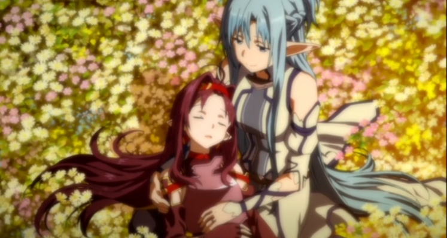
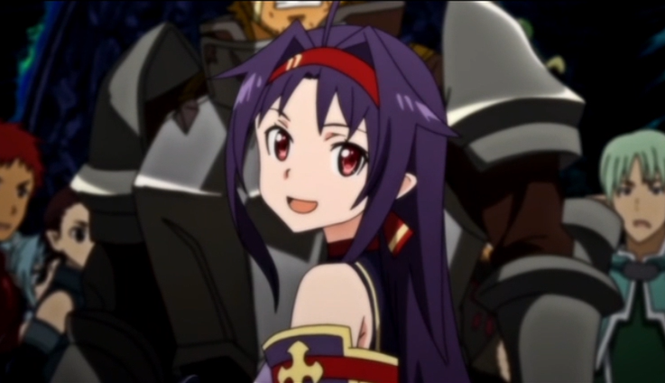

5月23日

ALOにおいて「絶剣（ぜっけん）」と呼ばれ圧倒的な強さを誇るプレイヤーで、二刀を使わなかったとはいえキリトを2度倒した唯一の人物。
ギルド「スリーピング・ナイツ」のリーダーを務めている。
種族はインプで、使用武器は黒曜石の刃を持つ極細の片手直剣。
その圧倒的強さから、アスナらにSAO生還者ではと疑問を持たれたほど。
自身が作ったOSSを賭けて辻デュエルをしていた際、キリトを破ったことに興味を持って対戦を挑んできたアスナと出会い、その強さを見込んでギルド1パーティのみによる新生アインクラッドの攻略という無謀なチャレンジへの助力を依頼する。

実は末期のHIV患者でギルド自体も難病で余命僅かなVRMMOユーザーのみで構成され、自身は亡き姉からリーダーを引き継いでいる。
上記のボス攻略戦もスリーピング・ナイツの最後の思い出作りが目的である。
ボス攻略を果たした後、アスナに姉の面影を重ねていることに気付きALOから一旦姿を消した。
その後、病院を訪ねてきた明日奈に「学校に行きたい」という願いを吐露し、和人らが作った視聴覚双方向通信プローブを利用して明日奈と共に学校へと通う。
ALOに戻った後は新生アインクラッドのいくつかの層の攻略に貢献。特に28層のフロアボスは、バーベキューパーティの二次会がてらサクヤやユージーンといったALOの有力者含む豪華メンバーによりノリと勢いでボッコボコにされてしまった。合掌。
統一デュエル・トーナメントでは決勝戦で再びキリトを破り優勝、勇名はALOの外にも響くこととなる。
他にもSAO世界の創造主のような人と遭遇したり、リアルではプローブを通じて明日奈たちと京都旅行を楽しんだりもした。
「ボク、頑張って生きた。ここで、生きたよ」